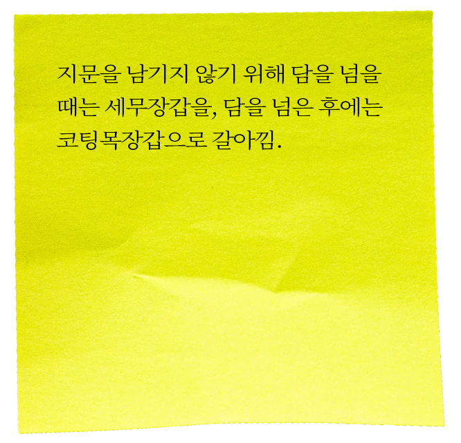
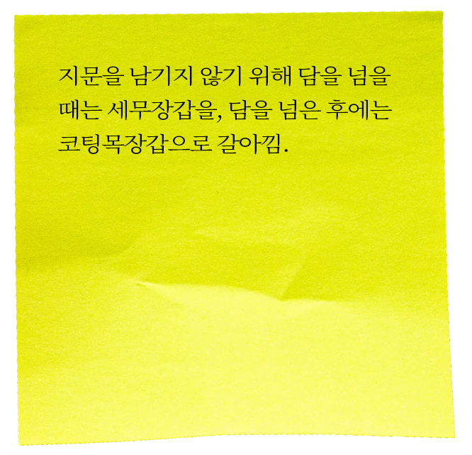

name. 황학동 노점상 사건
date. 2004년 04월 13일
place. 서울 동대문구 황학동
victim. 비아그라, 음란CD 판매자
유영철은 비아그라와 음란 CD를 판매하는 피해자의 동태를 살피다가 영업을 끝낸 피해자에게 다가가 위조한 서울지방경찰청장 명의의 경찰관 신분증을 제시하면서 “음비법위반, 약사법위반으로 적발하겠다”라며 피해자에게 수갑을 채워 승합차 조수석에 태움. 승합차를 운전해 가던 중 피해자가 유영철의 신분을 의심하는 듯한 태도를 보이자 피해자를 살려 두었다가는 그간의 살인 및 경찰관사칭 행각이 탄로날 것을 염려해 피해자를 살해.
오피스텔 주차장으로 가 피해자를 봐주는 척 안심시키면서 수갑이 채워진 피해자의 두 손을 위로 올리게 한 후 소지하고 있던 다른 수갑을 이용해 조수석 등받이 쇠기둥에 연결시켜 도주하지 못하도록 한 다음 자신의 오피스텔에 들어와 해머와 잭나이프, 코팅장갑 등을 가방에 넣어 돌아옴. 그 뒤 인적이 드문 신수동 소재 세강정형외과 주차장으로 이동하여 코팅장갑을 낀 손으로 잭나이프를 들고 피해자의 얼굴과 머리, 목 등을 마구 찌름. 피해자가 숨진 것으로 생각하고 눕힌 뒤 옷가지로 덮으려고 하였으나 숨진 줄 알았던 피해자가 발길질을 하며 사력을 다해 저항하자 다시 잭나이프로 피해자의 허벅지 등을 찌르고 해머로 피해자의 머리를 수회 내리쳐 피해자를 두부손상 등으로 사망에 이르게 함.

 
